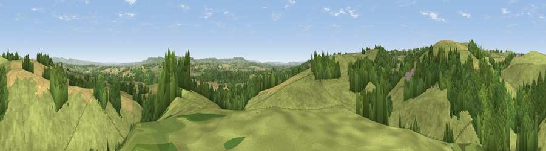

Viewpoint near Holcombe Rogus
#17068 in England · top 32% of its area beats it · near Holcombe RogusThe view, rendered

A 360° render of this exact spot computed from the terrain model, tree cover and land cover — summer colours, afternoon light, calibrated against photographs of famous viewpoints. Real trees, hedges and buildings will differ in detail.
The panorama
Grey silhouette: terrain skyline in each direction (720 bearings, Earth curvature and refraction included). Dashed green: skyline with trees (+15 m) and buildings (+8 m) as obstacles. Blue strip: how far the ground is visible on each bearing.
Where the view opens
Wedge length = distance to the farthest visible ground on that bearing (vegetation-aware). Rings at 10, 25 and 50 km.
What fills the view
67% grassland · 23% woodland · 10% cropland
Angular shares of the visible panorama (visual magnitude), not map area. Landscape diversity 0.38 (0–1 Shannon).
Key numbers
More beautiful places nearby
The staircase of upgrades: each row has a higher view potential than everything closer. Driving times are estimates from straight-line distance, calibrated against real road routing — check an actual route before setting out.
| Place | Direction | Drive | Score |
|---|---|---|---|
| Viewpoint near Hockworthy | WNW · 1 km | ~2 min | 61.0 |
| Viewpoint near Ashbrittle | NNW · 2 km | ~6 min | 62.7 |
| Heniton Hill | NW · 2 km | ~6 min | 66.6 |
| Viewpoint near Wiveliscombe | N · 6 km | ~14 min | 75.1 |
| Viewpoint near Elworthy | N · 15 km | ~26 min | 75.6 |
| Viewpoint near Pitminster | E · 15 km | ~26 min | 77.3 |
| Viewpoint near Elworthy | N · 16 km | ~28 min | 79.2 |
| Viewpoint near Roadwater | NNW · 17 km | ~30 min | 82.9 |
50.96641, -3.35175 · source: screening · position refined by local search. Computed location — check access rights before visiting.